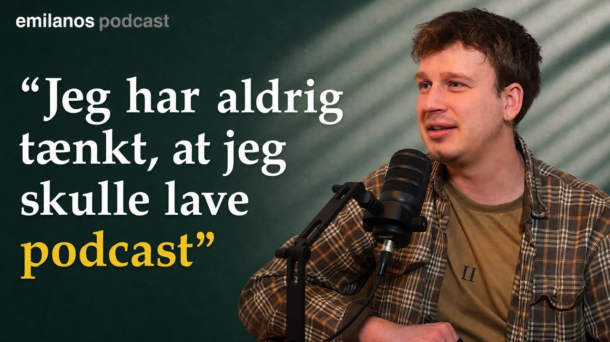
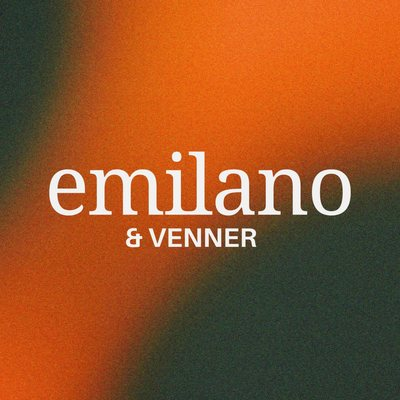

emilanos podcast
Jeg inviterer spændende mennesker i studiet og optager det. Og med “studie” mener jeg mit lille køkken på Nørrebro.
Nyeste episode
Alle episoder

Jeg inviterer spændende mennesker i studiet og optager det. Og med “studie” mener jeg mit lille køkken på Nørrebro.
